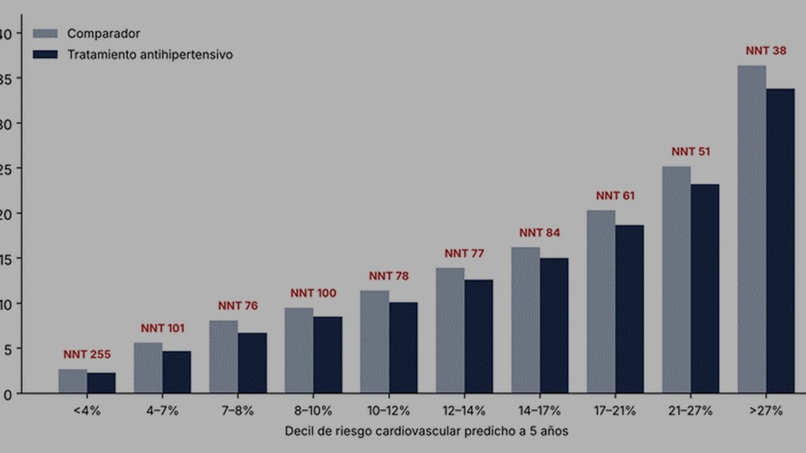
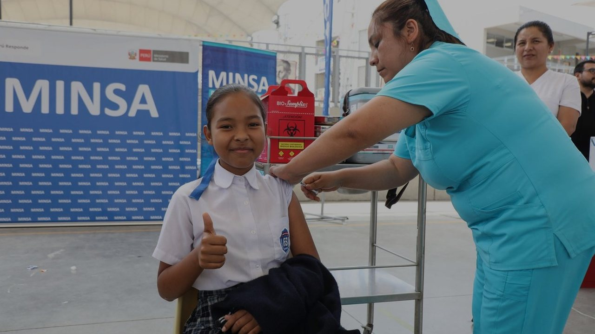
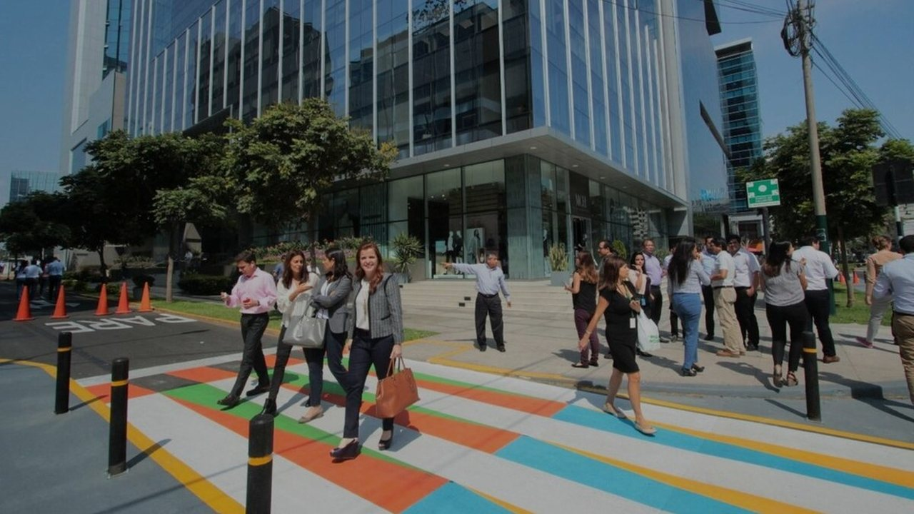

Primero, La gripe y el VRS ganan circulación en España, pero bajan las hospitalizaciones por infecciones respiratorias. En contexto, la gripe y el VRS ganan circulación en España, pero bajan las hospitalizaciones por infecciones respiratorias. Según Gaceta Médica, La gripe y el VRS ganan circulación en España, pero bajan las hospitalizaci






Primero, La gripe y el VRS ganan circulación en España, pero bajan las hospitalizaciones por infecciones respiratorias. En contexto, la gripe y el VRS ganan circulación en España, pero bajan las hospitalizaciones por infecciones respiratorias. Según Gaceta Médica, La gripe y el VRS ganan circulación en España, pero bajan las hospitalizaci
También, Así funciona la traducción en tiempo real en llamadas usando la IA de Google, Apple y Samsung en el celular. En contexto, así funciona la traducción en tiempo real en llamadas usando la IA de Google, Apple y Samsung en el celular. Según Infobae, Así funciona la traducción en tiempo real en llamadas usando la IA de Google, Apple y
También, Así sería vivir al borde de un agujero negro: energía casi infinita, envejecer más despacio y ver toda la historia del universo. En contexto, así sería vivir al borde de un agujero negro: energía casi infinita, envejecer más despacio y ver toda la historia del universo. Según El Confidencial, Así sería vivir al borde de un agujer
Primero, Baja de presión arterial mejora calidad de vida. En contexto, reducir la tensión arterial en todos los niveles de riesgo ofrece grandes beneficios para la salud y la calidad de vida.
También, Temblor en Venezuela 1.6 magnitud. En contexto, un sismo de magnitud 1.6 sacudió el Mar Caribe, 47 km al noreste de Maracay, el jueves 26 de noviembre a la 1:23 a.m.
También, Congestión por oleaje en Costa Verde. En contexto, la MML restringe el tránsito en la Costa Verde debido a fuerte oleaje, afectando rutas y generando congestión.
Primero, Detección instantánea de anemia infantil en Amazonas. En contexto, en la región del Amazonas, una tecnología innovadora de EsSalud descubre anemia en niños en tan solo 20 segundos, sin necesidad de sangre.
Y por último, Bacterias perdidas: posible raíz de cansancio y estrés. En contexto, un nuevo estudio sugiere que la pérdida de bacterias intestinales puede ser la causa subyacente de cansancio, alergias y estrés.
Cada edición dura menos de dos minutos. En la web tienes el resumen de cada historia y el enlace directo al medio original para leerla completa.
Conoce Olfatecho →